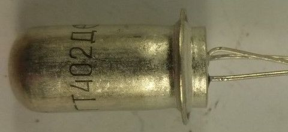

Транзистор ГТ402(А-Е)
Транзисторы ГТ402 - германиевые, усилительные, средней мощности низкочастотные, структуры p-n-p (комплементарны ГТ404).
Предназначены для применения в выходных каскадах усилителей малой мощности.
Выпускались в металло-стеклянных корпусах двух видов с гибкими выводами.
Масса варианта 1 - не более 5 г., варианта 2 - не более 2 г.
Маркировка буквенно - цифровая.

Рис. 1 - Внешний вид транзистора ГТ402

Рис. 2 - Габаритные размеры и цоколевка транзистора ГТ402
Таблица 1
| Параметр | ГТ402А | ГТ402Б | ГТ402В | ГТ402Г | ГТ402Е |
|---|---|---|---|---|---|
| Постоянная рассеиваемая мощность(Рк т max ), Вт | |||||
| с корпусом по 1-му варианту | 0,6 | ||||
| с корпусом по 2-му варианту | 0,3 | ||||
| Максимальное напряжение коллектор-эмиттер, B | 25 | 25 | 40 | 40 | 25 |
| Максимальный ток коллектора, A | 0,5 | ||||
| Коэффициент передачи тока в схеме ОЭ в режиме насыщения при токе эмиттера 3 мА |
30-80 | 60-150 | 30-80 | 60-150 | 60-150 |
| Граничная частота передачи тока (fh21э), МГц | 1 | ||||
| Обратный ток коллектор-эмиттер, мкА при температуре 20°C |
не более 20 | ||||
Зарубежные аналоги транзисторов ГТ402
- ГТ402Б - AC127.
- ГТ402Е - AC132, GC501.
Источники:
elektrikaetoprosto.ru - Транзисторы ГТ402, ГТ404 - параметры, цоколевка.